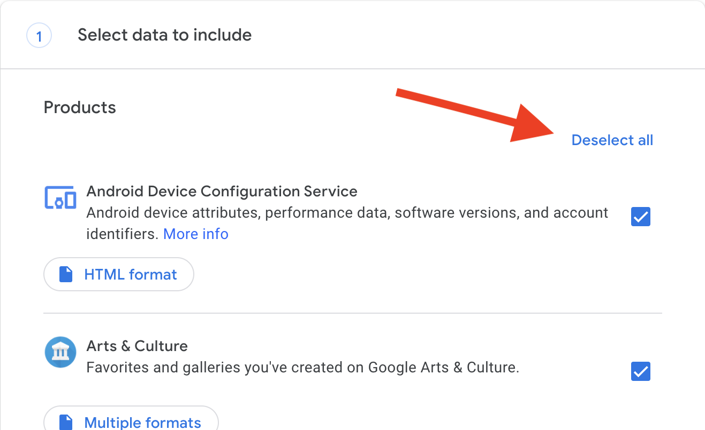
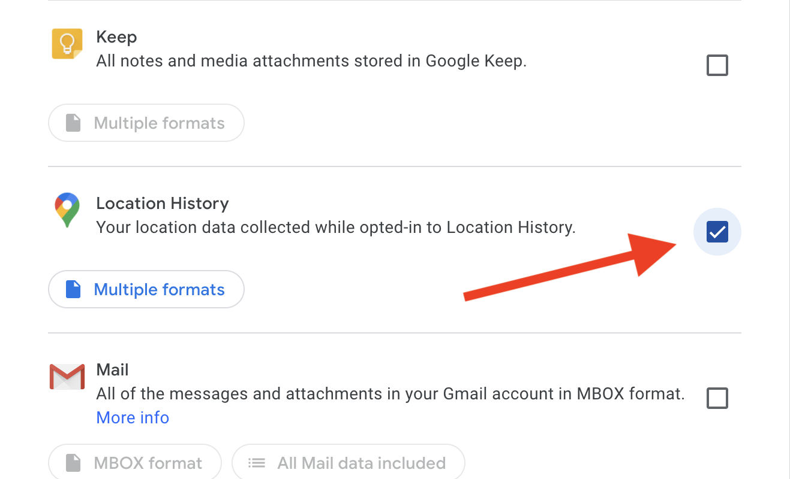

לאפליקציה זו אין הרשאות להיסטוריית המיקומים בגוגל
יש לבצע את ההוראות הבאות:
1. הכנסו לגוגל טייקאאוט
https://takeout.google.com
2. בטלו את הסימונים

3. רדו למטה וסמנו את היסטוריית המיקומים:

4. רדו עד למטה ולחצו על next step.
5. לחצו על create export.
6. כמה דקות אחר כך ישלח אליכם קובץ zip באימייל. זה הקובץ הדרוש למערכת.